2.1 Introduction
All living things, whether unicellular (one cell) or multicellular (many cells), must survive from day to day and reproduce. The priority of life is to survive, both as an individual and as a member of a species.
Food, water and oxygen are metabolic requirements for survival in all animals, including humans. Clothing and shelter provide protection from the elements.
The requirements for life (oxygen, nutrients, water and removal of waste) are provided by body systems working together, such as the respiratory, circulatory, digestive, nervous, endocrine and urinary (excretory) systems. The muscular, skeletal, lymphatic (immune), integumentary (outer layer, e.g. skin) and reproductive systems let us take advantage of our environment.
Only through the coordination and control provided by the nervous and endocrine systems can individual cells work together for the survival of the whole multicellular organism.
2.2 The Metabolic Needs of Life
Nutrients needed by living organisms include carbohydrates, lipids, proteins, vitamins, minerals, fibre and water. Organisms can be autotrophic (producers, which make their own food) or heterotrophic (consumers, which eat other organisms).
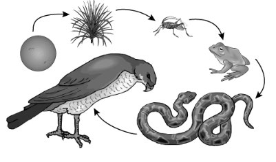
Use the word bank to complete the sentences.
All organisms need some form of food. Food provides to perform their life functions (reproduce, grow and develop, metabolise, respond to stimuli, and move). It also provides (e.g. calcium) and nutrients to act as building materials for the organism's body.
The is the ultimate source of energy for all living things on Earth (we are "solar-powered"). Plants use the Sun's energy to combine carbon dioxide and water to make their food in a process called . The sugar produced by this process is called .
are organisms that can make their own food using energy from their surroundings. Plant-eating animals (called ) eat the plants and the energy is transferred into their bodies. Meat-eating animals (called ) eat the herbivores. Organisms that eat both plants and animals are called . are organisms that eat other living organisms.
break down the nutrients in dead organisms or in animal wastes to obtain food. When organisms die, the nutrients and minerals in their bodies are recycled back into the soil as their bodies decay. This is called the nutrient cycle. The system and system ensure food is digested and delivered to every cell.
Water
Cells are approximately 70% water. Water is necessary for living things because most of the chemical reactions in metabolism need water. Water provides a medium for digested food to be transported to the cells. Many organisms live in water, which makes up their habitat. Water is recycled through the water cycle.
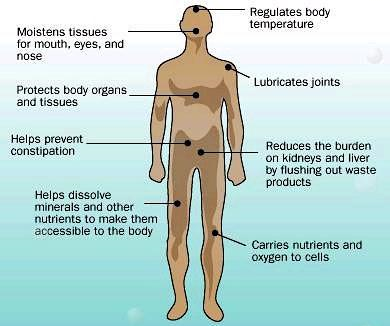
Oxygen
Living organisms need oxygen to combine with food to release energy from it. Even plants, which use carbon dioxide to make their food, need oxygen to "burn" the food they have made. We say that plants give off net oxygen because they produce far more oxygen in photosynthesis than they use to release energy from their food.
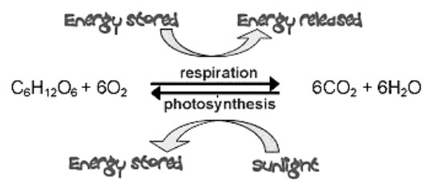
Use the word bank to complete the sentences.
Water dissolves wastes so that they can be moved out of the cells and from the body (as sweat or urine).
Water is largely absorbed in the digestive system by the . From here it travels in the to all cells.
Water leaves the body as urine via the kidney filtering system, known as the system.
Living organisms need oxygen to combine with food to release energy, a process called .
2.3 Transport of Nutrients into the Cell
The requirements of life need to move into cells so they can be used for metabolism, making new molecules, growth and reproduction. But how do they get in?
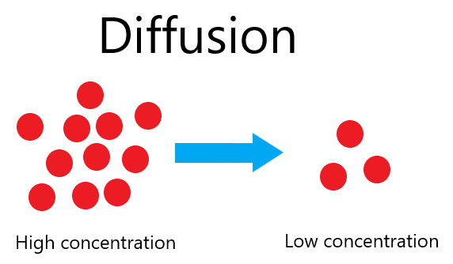
Cells need molecules like oxygen and glucose for metabolic reactions that produce energy. The blood carries these molecules around the body, so they are at a much higher concentration in the bloodstream than in the cells, and they diffuse into the cells. Waste products like carbon dioxide diffuse out of the cell, because they are at a higher concentration inside the cell than in the blood.
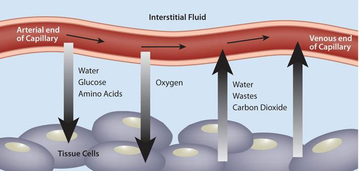
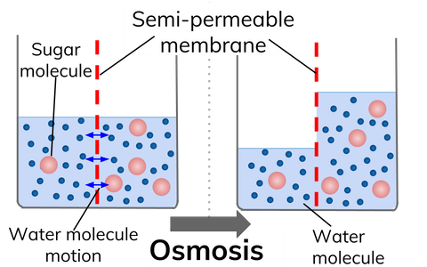
Osmosis only occurs across membranes in living cells, whereas diffusion can occur anywhere!
If animal cells were placed in pure water, they would swell and eventually burst, because water keeps moving into the cell to try to even out the concentration. Plant cells would not burst, because of the cell wall. The cell wall only expands a certain amount and then stops any more water moving in.
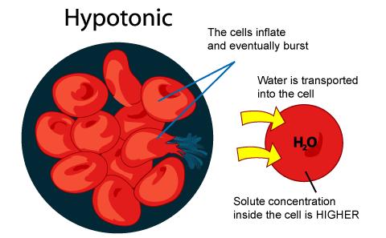
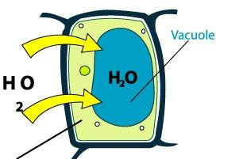
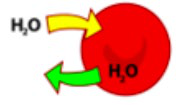
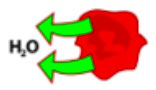
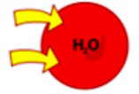
In each diagram, two solutions of different concentrations are separated by a semipermeable membrane (the line down the middle). Describe the overall movement of water in each diagram. In which example would osmosis occur most rapidly? Why?
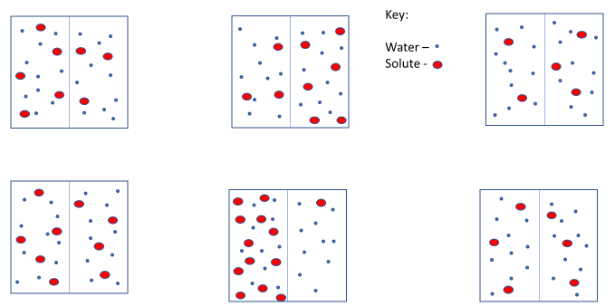
In each diagram, the overall (net) movement of water is from the side with fewer solute particles (more water) to the side with more solute particles (less water).
Osmosis occurs most rapidly in the diagram with the biggest difference in solute concentration between the two sides (the bottom-middle diagram, where one side is crowded with solute and the other has very little). A steeper concentration gradient means a faster rate of osmosis.
2.4 Diffusion and Osmosis worksheet
How are the molecules moving in these examples? Choose OSMOSIS or DIFFUSION.
- The student sitting next to you just came from gym class, forgot to shower, and you can tell.
- After sitting in the bathtub for hours, your fingers start to look like prunes.
- The girl sitting two rows ahead of you put on too much perfume this morning.
- One way to get rid of slugs in your garden is to sprinkle salt on them. They shrivel up.
- Yum! Something smells good! The neighbours are having a barbeque.
- Gargling with salt water when you have a sore throat causes your swollen throat cells to shrink.
- Oxygen molecules move from the air sacs in the lungs across the cell membranes into the blood.
Osmosis is only the movement of water across a membrane. Smells spreading through air and oxygen moving into the blood are diffusion of other particles.
In which direction will the particles diffuse in each case?
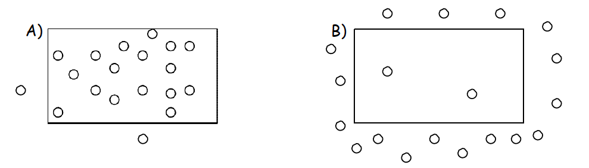
A)
B)
For each cell, what is the net movement of sugar? (Assume sugar molecules can pass through the cell membrane.)
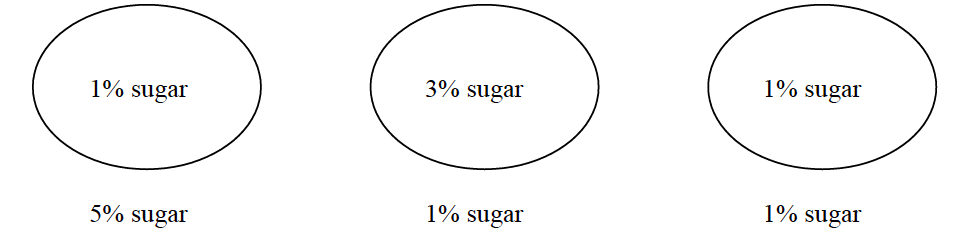
Cell 1 (1% inside, 5% outside):
Cell 2 (3% inside, 1% outside):
Cell 3 (1% inside, 1% outside):
Diffusion always causes particles to move from a region of concentration to a region of concentration.
Does a cell use energy when molecules diffuse in or out? Why?
No. Diffusion is a passive process: particles move naturally down a concentration gradient (from high to low concentration) because of their own random movement, so the cell does not need to use any energy.
Match each term with the best description.
You have just bought a tropical fish for your freshwater (no salt) aquarium. Unfortunately, you didn't realise it is a saltwater fish, which is isotonic to salty water. Using your knowledge of osmosis, explain why this fish will not survive in your aquarium.
The fish's cells contain a high concentration of salt (solute), matching salt water. Fresh water is hypotonic to the fish's cells: there is more water (less solute) outside the cells than inside. Water therefore moves into the fish's cells by osmosis, causing them to swell and eventually burst, so the fish dies.
For each cell, does the solute move inside or outside the cell, and does water move inside or outside? Describe the outside solution.
| Inside cell | Outside cell | Solute moves (diffusion) | Water moves (osmosis) | Outside solution is |
|---|---|---|---|---|
| 5% salt | 10% salt | |||
| 10% salt | 10% salt | |||
| 3% glucose | 1% glucose | |||
| 2% protein | 1% protein | |||
| 5% salt | 5% salt | |||
| 13% water | 25% water |
Solutes diffuse from high to low solute concentration. Water moves the opposite way: towards the side with more solute. In the last row the percentages are of water: there is more water outside (25%) than inside (13%), so water moves in and solute moves out.
2.5 The Problems of Unicellular Life
Unicellular life began 3.5 billion years ago. It was another 2 billion years before multicellular life evolved.
- A unicellular (single-celled) organism consists of only one cell. Prokaryotes (bacteria), most protists and some fungi are unicellular. Some live in colonies, but they are still unicellular.
- A multicellular organism consists of many cells attached to each other, with specialised functions. Plants, animals and most fungi are multicellular.
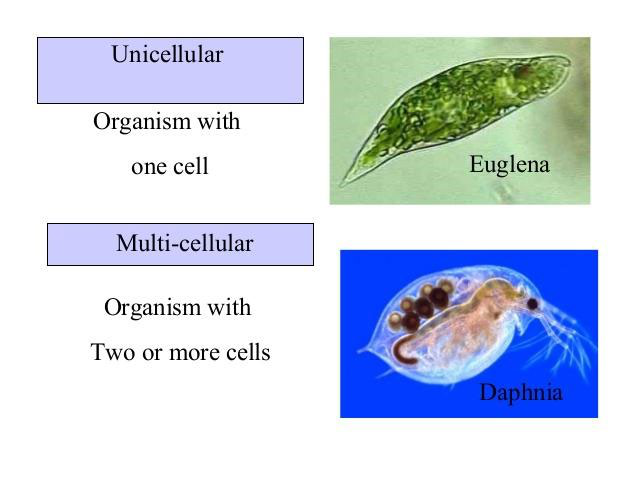
| Unicellular organism | Multicellular organism |
|---|---|
| Body is made up of a single cell | Body is made up of numerous cells |
| A single cell carries out all the life processes | Different cells are specialised to perform different functions |
| The cell is exposed to the environment on all sides | Only outer cells face the environment; inner cells do other jobs |
| An injury to the cell can cause the death of the organism | Injury or death of some cells doesn't affect the organism, as new cells can replace damaged ones |
| The cell cannot grow large, because of the limit set by surface area to volume ratio | The body can grow large by increasing the number of small cells |
| Replication of identical cells | Specialised cells only produce certain cells |
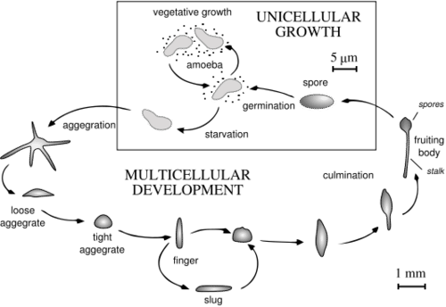
2.6 What Limits Cell Size?
A hypothetical cube-shaped cell is increasing in size.
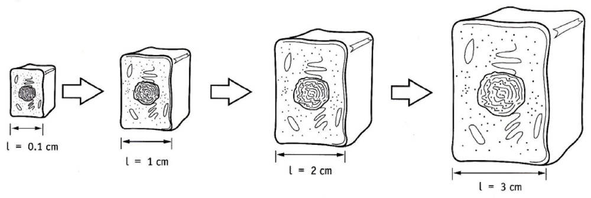
Write the ratio as a number to 1, e.g. 6 for 6:1.
| Cell size (length) | Surface area (cm2) | Volume (cm3) | SA:V |
|---|---|---|---|
| 0.1 cm | |||
| 1 cm | |||
| 2 cm | |||
| 3 cm |
For the 2 cm cell: SA = 6 × 22 = 24 cm2, V = 23 = 8 cm3, so SA:V = 24 ÷ 8 = 3, i.e. 3:1.
- Which cell has the largest surface area?
- Which cell has the largest volume?
- Which cell has the largest SA:V?
What happens to the cell's SA:V as the cell increases in size?
The SA:V ratio decreases as the cell gets bigger, because volume increases faster (cubed) than surface area (squared).
Which cell would most efficiently supply its volume with nutrients, given its available surface area?
As a cell increases in size, what happens to its ability to supply its volume with nutrients?
It gets worse. There is less surface area (membrane) for each unit of volume, so nutrients can't diffuse in (and wastes can't diffuse out) fast enough to meet the needs of the whole cell.
Explain how this places a limit on cell size.
A cell relies on diffusion across its surface to get nutrients and oxygen and to remove wastes. If it grows too large, its SA:V becomes too small: the surface can't exchange materials fast enough to support the volume, and diffusion to the centre takes too long. The cell would die, so cells must stay small.
During evolution, some organisms have become larger. But instead of single cells becoming larger, cells have stayed microscopic and organisms have become multicellular. What role does SA:V play in this trend?
Small cells have a high SA:V, so they can exchange materials efficiently by diffusion. A single giant cell would have a very low SA:V and couldn't survive. By being made of many small cells, a large organism keeps each cell's SA:V high. Multicellular organisms also evolved specialised organs (lungs, intestines, kidneys) with large surface areas, and transport systems (blood), to supply all their cells.
2.7 Cell Shape and Surface Area to Volume Ratio
The surface area to volume ratio of all cells is very important: the larger the SA:V, the faster the exchange with the environment. There are advantages and disadvantages to both high and low SA:V.
- A hibernating bear curls up to reduce its SA:V and lose less heat.
- A lizard flattens out in the morning sun to increase its SA:V and warm up.
- Plant roots have tiny projections (root hairs) to increase surface area for nutrient uptake.
- Red blood cells are concave (dented) to increase their SA:V.
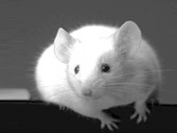
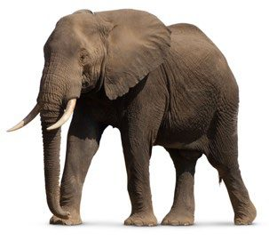
Aim: to explore how SA:V changes with different shapes.
| Shape | Surface area formula |
|---|---|
| Cube | SA = 6 × a2 (a = side length) |
| Sphere | SA = 4πr2 (r = radius, π = 3.142) |
| Rectangular prism / flat sheet | SA = 2 × ((l × w) + (l × h) + (w × h)) |
| Cylinder | SA = 2πr2 + 2πrh |
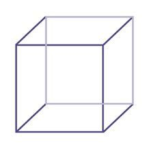
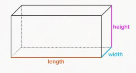
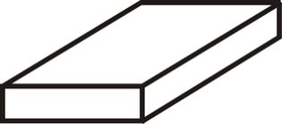
Calculate the surface area and SA:V ratio of each shape. Every shape has a volume of 8 cm3. Round to 1 decimal place; answers within 5% are accepted.
| Shape | Dimensions (cm) | Surface area (cm2) | Volume (cm3) | SA:V (to 1) |
|---|---|---|---|---|
| Cube | side 2 | 8 | ||
| Sphere | radius 1.24 | 8 | ||
| Rectangular prism | 4 × 2 × 1 | 8 | ||
| Cylinder | radius 1.13, height 2 | 8 | ||
| Flat sheet | 8 × 2 × 0.5 | 8 |
Sphere: 4 × 3.142 × 1.242 ≈ 19.3 cm2. Cylinder: 2 × 3.142 × 1.132 + 2 × 3.142 × 1.13 × 2 ≈ 8.0 + 14.2 = 22.2 cm2. Flat sheet: 2 × (16 + 4 + 1) = 42 cm2.
- Which shape has the most surface area?
- Which shape has the highest SA:V?
- Which shape has the smallest SA:V?
All five shapes have the same volume, but the flat, spread-out sheet has the most surface, while the compact sphere has the least.
If you were designing an animal for maximum surface area to volume ratio, what would it look like?
It would be flat and thin (like a sheet or a flatworm), or long and thin, with lots of folds, branches or projections (like fins, frills or large thin ears) to add surface area without adding much volume.
A mouse has a larger SA:V than an elephant. How would this affect the animal's metabolic rate? Explain.
The mouse would have a higher metabolic rate. With a large surface compared to its volume, it loses heat quickly to the environment, so it must respire (burn food) faster to generate enough heat to stay warm. That's why mice eat a lot for their size and have a very fast heart rate (about 500 bpm compared with an elephant's 28 bpm).
Look at the images of the mouse and elephant. Explain the difference in the shape and size of their ears. (Hint: think about heat loss.)
The elephant has huge, thin ears that greatly increase its surface area. Because an elephant has a low SA:V, it holds heat well and struggles to lose it in hot weather, so its large ears (full of blood vessels) help it lose excess heat. The mouse already has a high SA:V and loses heat easily, so it has small ears to reduce heat loss.
If an animal lived in Antarctica, would it be better to have a high or a low surface area to volume ratio? Explain.
A low SA:V is better (a large, rounded body with small ears and limbs). Less surface area compared with volume means less heat is lost to the cold environment. Examples: penguins, seals and whales are large and rounded.
Why is it important for cells to have a high surface area to volume ratio?
A high SA:V means there is plenty of membrane to exchange materials. Nutrients and oxygen can diffuse in, and wastes can diffuse out, quickly enough to supply the whole cell volume and keep the cell alive.
2.8 Everything Around Us is Scale Dependent
For cells, the cell membrane allows nutrient and oxygen exchange, and these then diffuse quickly through the small cell. If a cell were the size of an elephant, diffusion would be far too slow and the cell couldn't survive. As a cell gets larger, its surface area doesn't increase as fast as the volume it encloses, so not enough nutrients can diffuse in to sustain that volume.
Small single-celled organisms have a high SA:V, so they can rely on oxygen and materials diffusing in (and wastes diffusing out) to survive. Larger animals need specialised organs (lungs, kidneys, intestines and so on) that increase the surface area for exchange, plus a circulatory system to move materials and heat between the surface and the core of the body.
Size can also cause biological problems. King Kong, the fictional giant gorilla, would not have enough lung surface area to meet his oxygen needs, and couldn't survive.
Single-celled organisms
Why are single-celled organisms so small? Tiny organisms must take in food, water, gases and chemicals and excrete wastes. In small cells, every part of the cell is near the membrane, so exchange with the environment is simple. As cells grow larger, their contents increase in volume and it becomes harder to make everything work together. The membrane doesn't increase in area as quickly as the volume, so at some point the cell becomes inefficient.
Small animals
Very small organisms have a lot of surface compared to their volume.
- Small warm-blooded animals (endotherms), like mice and hummingbirds, have to eat a lot for their weight to keep themselves warm. In cold weather they lose heat rapidly, so they need to eat a lot, stay somewhere warm and have good insulating fur or feathers.
- Many small animals are cold-blooded (ectotherms): amphibians, fish, reptiles and insects metabolise at the temperature of their environment. A small cold-blooded animal warms up quickly on a sunny rock and needs little food. However, cold-blooded animals react more slowly when they are cold, and must find refuges from predators as the environment cools.
Large animals
Large animals hold heat well, but may struggle to get rid of body heat in very hot weather. This is a serious problem, because proteins break down if the body gets too hot. Many animals lose extra heat by sweating or panting, and elephants lose heat from their large, thin ears.
Endothermic animals generate their own body heat internally, as a by-product of metabolic reactions. Ectothermic animals must get their heat from an external source like the Sun. There is some disagreement about whether dinosaurs were endothermic, ectothermic or in between. A large, warm dinosaur could probably stay warm overnight, but if it ever got really chilled, it would take a very long time to warm up!
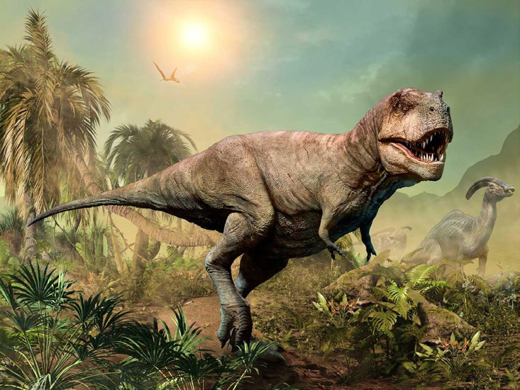
Being large also puts demands on the body's supporting structures. A larger animal needs more massive bones, more blood (and a heart to pump it), bigger lungs and more digestive capacity. Animals adapt to their environments: ponies are horses with smaller bodies that can live where pasture is sparse, and the last mammoths were pygmies, only about one metre tall.
As animals get bigger, from a tiny mouse to a huge blue whale, pulse rates slow down and life spans get longer. The number of heartbeats in a lifetime is roughly the same for all animals, around a billion; a mouse just uses them up more quickly. These patterns follow a mathematical rule called quarter-power scaling: a cat, 100 times more massive than a mouse, lives about 100¼ ≈ 3 times longer, and its heart beats about a third as fast.
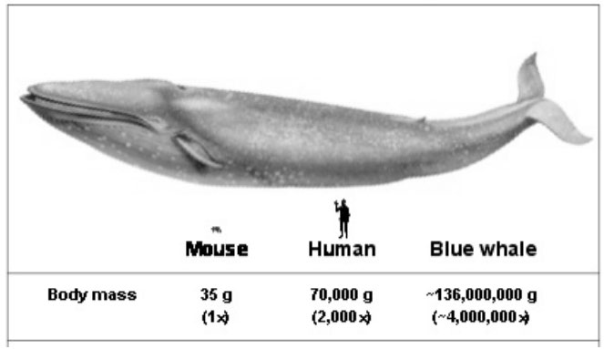
What factor limits the size of a cell?
The surface area to volume ratio. As a cell grows, its volume increases faster than its surface area, so diffusion across the membrane can't supply the cell with enough nutrients and oxygen (or remove wastes) fast enough.
Multicellular organisms are much larger than unicellular organisms. How does a multicellular organism overcome the factor that limits the size of unicellular organisms?
It is made of many small cells, each with a high SA:V, rather than one big cell. It also has specialised organs with large surface areas (lungs, intestines, kidneys) and a circulatory system to transport materials to and from every cell.
What does endothermic mean? Give three examples of endotherms.
Endothermic ("warm-blooded") animals generate their own body heat internally, as a by-product of metabolism, and keep a steady body temperature. Examples: humans, mice, dogs, elephants, hummingbirds, penguins (mammals and birds).
What does ectothermic mean? Give three examples of ectotherms.
Ectothermic ("cold-blooded") animals get their body heat from an external source such as the Sun, so their body temperature changes with the environment. Examples: lizards, snakes, frogs, fish, insects.
Would you prefer to be ectothermic or endothermic? Explain your choice, giving an advantage and a disadvantage.
Any well-reasoned answer, for example:
Endothermic: advantage: you can stay active and react quickly even when it is cold. Disadvantage: you need to eat a lot of food to generate heat.
Ectothermic: advantage: you need very little food. Disadvantage: you become slow and sluggish when it is cold, and must find shelter from predators.
What are three consequences of being a large animal, and how do large animals overcome them?
- Overheating: they hold heat well but struggle to lose it. They overcome this by sweating, panting or having large thin ears (elephants).
- Supporting the body: they need more massive, stronger bones.
- Supplying more cells: they need more blood, a powerful heart, larger lungs and more digestive capacity to get enough oxygen and food to every cell.
(Also: they need lots of food, so some species have evolved smaller bodies where food is scarce, e.g. ponies and pygmy mammoths.)